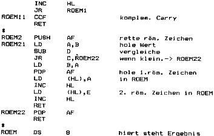
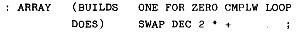
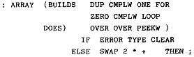
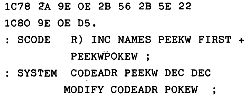

Nascom Journal |
Juli/August 1982 · Ausgabe 7/8 |

Das Fragezeichen in der Überschrift soll die Hoffnung ausdrücken, daß die anderen Nascom-Anwender, die an dem in dieser Artikelserie beschriebenen Fädelcode-Interpreter arbeiten, (z.B. an einer Anpassung an das Standard-FORTH) oder gar eine eigene Implementation entwickeln, das Ergebnis ihrer Arbeit den Lesern des Journals zur Verfügung stellen. Die Artikelserie wird aber mit diesem Beitrag beendet.
Allen Versprechungen zum Trotz werde ich nochmals eine Erweiterung des Systems beschreiben, die erst in den neueren FORTH-Versionen eingeführt wurde und die Fähigkeiten der Sprache erheblich verbessert. Die Funktionen „(BUILDS“ und „DOES)“ ermöglichen die Erzeugung definierender Funktionen. (Diesen Satz bitte zweimal lesen!) Es lassen sich damit Klassen von beliebigen Datenstrukturen erzeugen. Einige Beispiele sollen dies erläutern:
Damit wird die Funktion „ARRAY“ definiert, mit der wiederum „Arrays“ definiert werden können:
20 ARRAY A1
erzeugt die eindimensionale Matrix A1 mit 20 Elementen. Mit
5 A1
erhalten wir die Adresse des 5. Wertes der Matrix A1 (mit PEEKW erhalten wir den Wert selbst). Mit
20000 7 A1 POKEW
Erteilen wir dem 7. Element der Matrix A1 den Wert 20000.
Wir können die Funktion „ARRAY“ auch mit einer Überlaufkontrolle versehen. Dann muß sie folgendermaßen definiert werden:
Wird eine Matrix z.B. mit 20 Elementen definiert, dann erfolgt bei Eingabe eines größeren Index eine Fehlermeldung.
Auf ähnliche Weise lassen sich mehrdimensionale Matrizen, BCD- oder Stringvariablen oder „Records“ (gemischte Datentypen) definieren. Allgemein hat jede solche Definition die Form:
: (Name) (BUILDS (Code1) DOES) (Code2) ;
Erklären kann man das vielleicht am besten anhand der Beispielfunktion „ARRAY“: Wird die Matrix A1 definiert, so wird (Code1) ausgeführt, wird die Matrix A1 selbst aufgerufen, wird (Code2) ausgeführt. Dabei muß berücksichtigt werden, daß auch die Funktion „DOES)“ einen Beitrag leistet: sie gibt stets die Startadresse des Datensatzes auf den Stack. Konkret bedeutet dies: der auf „(BUILDS“ folgende Code in der (ersten) Definition von „ARRAY“ erzeugt in der Definition von A1 die 20 freien Speicherplätze; „DOES)“ und der darauf folgende Code berechnen während des Aufrufs von A1 die Adresse des (im Beispiel) 5. Elementes. (Ich hoffe, daß jetzt keiner das Nascom-Journal frustriert in die Ecke pfeffert – Ich hab das auch erst nach etlichen Anläufen kapiert!) Die Erklärung der Programmierung von „(BUILDS“ und „DOES)“ erspare ich mir; das ist wirklich nur etwas für Tüftler. Es folgt hier einfach der Code:
MCODE R)
| Seite 47 von 60 |
|---|